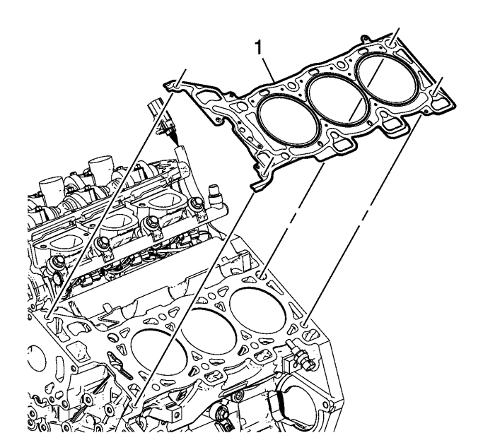
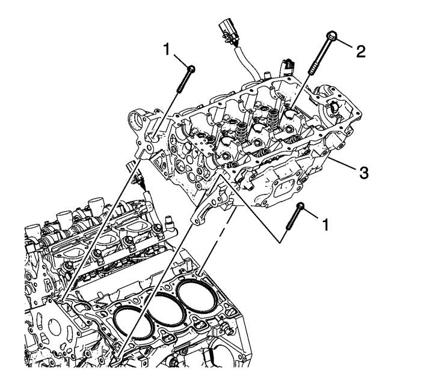
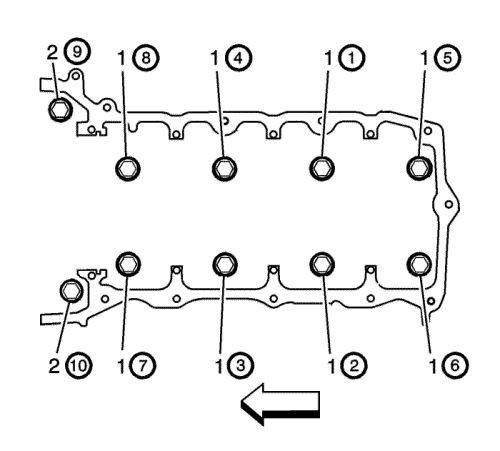

Montaje de la culata, lado izquierdo — LF1 o LFW
Herramientas especiales
EN 45059 Medidor de ángulos
Si desea informarse sobre herramientas regionales equivalentes, consultar Herramientas especiales .

- Asegúrese de que los pasadores de fijación de la culata estén bien montados en la superficie del bloque motor.
- Coloque una junta NUEVA en la culata izquierda (1) utilizando los pasadores de fijación de la superficie para sujetarla.

- Alinee la culata izquierda (3) con los pasadores de fijación.
- Coloque la culata izquierda en su sitio en la superficie.
Precaución: Consulte Precaución con las fijaciones en la sección Prólogo

Nota: NO deje que los tetones de los pernos de la culata se manchen de aceite.
Nota: NO reutilice los pernos viejos de la culata.
- Coloque los tornillos M11 de la culata NUEVOS (1).
| 5.1. | En primer lugar, apriete en orden los tornillos M11 de la culata hasta 30 N·m (22 lib. pie). |
| 5.2. | En un segundo paso, apriete en orden los tornillos M11 de la culata otros 150 grados usando el medidor EN 45059. |
- Coloque los 2 tornillos M8 de la culata NUEVOS de la parte delantera izquierda (2).
| 6.1. | En primer lugar, apriete los tornillos M8 de la culata hasta 15 N·m (11 lib. pie). |
| 6.2. | En un segundo paso, apriete en orden los tornillos M8 de la culata otros 75 grados usando el medidor EN 45059. |
| © Copyright Chevrolet Europe. All rights reserved |